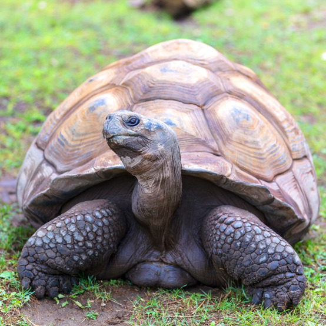

Galapagos Tortoise
Chelonoidis niger

| Basic Information |
|---|
| Common Name(s): Galapagos Giant Tortoise 1 |
| Scientific Name: Chelonoidis niger 1 |
| Conservation Status: Endangered 3 |
| Classification | ||
|---|---|---|
| Kingdom: Animalia 1 | Phylum: Chordata 1 | Subphylum: Vertebrata |
| Class: Reptilia 1 | Order: Testudines 1 | Suborder: Cryptodira 1 |
| Family: Testudinidae 1 | Genus: Chelonoidis 1 | Species: Chelonoidis niger 1 |
Physical Profile
Size Range
Male Galápagos giant tortoises can reach about 6 feet (1.83 m) from head to tail and weigh up to 573 pounds (260 kg).
Identification Markings
Galápagos tortoises have large, heavy shells that are generally dark gray or brown. 3 Their shells occur mainly in two forms: domed shells and saddleback shells, which curve upward in front and allow the tortoise to stretch its neck higher for food. 3 They also have thick, sturdy, elephant-like legs. 3
Habitat & Geography
Habitats
Galápagos tortoises live in habitats ranging from dry, grassy lowlands and scrubland to humid volcanic highlands. 2 4 Some tortoises migrate between lowlands and highlands depending on temperature, rainfall, food, and nesting needs. 5
Distribution
Galápagos giant tortoises are native to the Galápagos Islands of Ecuador. 2 Different populations occur or historically occurred on islands including Española, Isabela, Floreana, Pinta, Pinzón, San Cristóbal, Santa Cruz, Santiago, Fernandina, and Santa Fe. 2
Distribution Map

Ecology & Behavior
Feeding and Diet
Galápagos tortoises are herbivores that eat grasses, cactus pads and fruits, leaves, flowers, and other vegetation. 2 3 They can store large amounts of water and may survive for long periods without drinking. 2 3
Behaviors and Adaptations
Galápagos tortoises may spend around 16 hours a day resting. 2 They regulate their body temperature by basking in the sun, resting in shade, or partially submerging themselves in mud or water. 2 3 Some populations also migrate between highlands and lowlands as food and weather conditions change. 5
Communication
Galápagos tortoises mainly communicate through body movements and dominance displays. 2 Competing tortoises raise their bodies and stretch their necks upward, with the taller individual usually winning the confrontation. 2 Males also produce a loud groaning sound during mating, which is the main known vocalization. 2
Life History Cycle & Breeding Behaviors
Breeding occurs mainly during the hot season from January to May, although mating may occur throughout the year. 2 Females travel to dry nesting areas, dig nests with their hind legs, and lay between a few and more than 20 eggs depending on the species. 2 Eggs generally incubate for about 110–175 days, and hatchlings receive no parental care after emerging. 2
Predators
Adult Galápagos tortoises have few natural predators, but eggs and hatchlings are vulnerable. 2 Introduced animals such as rats, pigs, dogs, and invasive ants prey on young tortoises and eggs. 2